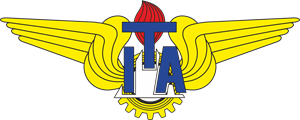

- Apresentação
- >
- Currículo
Currículo
Dados Pessoais
 

Idiomas:
Português (Nativo) ↦
Inglês Avançado ↦
Espanhol Intermediário ↦
Um pouco sobre mim
Engenheiro e Projetista do Instituto Tecnológico de Aeronáutica, tendo ocupado previamente diversas funções no instituto, como Reitor, Pró-reitor de Pesquisa e Relacionamento Institucional, Chefe de Departamento, Coordenador de Cursos e Coordenador de Projetos. Ex-presidente da CAPES - Coordenação de Aperfeiçoamento de Pessoal de Nível Superior. Foi membro do Conselho Deliberativo e é atual pesquisador do CNPQ, nível 1B.
Atuou na Equipe de Transição entre os Governos Temer e Bolsonaro, na área de Educação. Assessor ad-hoc da CAPES, FAPESP e CNPQ. Editor Associado da Revista Transportes. Revisor de diversos periódicos nacionais e internacionais. Membro de comitês do Transportation Research Board - USA. Trabalhou na McLane Logistics do Brasil, como Gerente de Operações. Foi Superintendente de Infraestrutura Aeroportuária da ANAC - Agência Nacional de Aviação Civil. Foi Presidente da Sociedade Brasileira de Pesquisa em Transporte Aéreo.
Possui graduação em Engenharia Civil pela Universidade Estadual de Campinas (1998), mestrado em Engenharia de Infraestrutura Aeronáutica pelo Instituto Tecnológico de Aeronáutica (2000) e doutorado em Engenharia de Transportes - University of Calgary (2004) - Canadá.
Educação

2018-2020
Engenharia de Controle e Automação / PhD / Chicago University
2015-2018
Sistemas embarcados / Master / University of Debrecen
2010-2015
Engenharia Mecatrônica / Bacharel / Instituto Tecnológico de Aeronáutica (ITA)
Experiência de Trabalho

2018-2020
Engenheiro Projetista | Thales | Itajubá MG
2015-2018
Professor Dr. Universitário | UNIFEI | Itajubá MG
Contato
rafael_almeida@unifei.edu.br
+ 55 (35) 998523620
← Apresentação